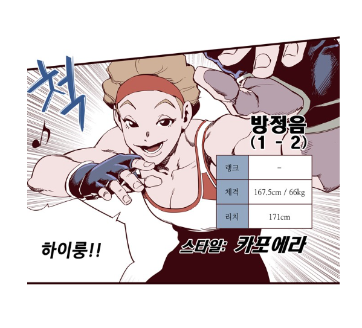

<!DOCTYPE html>
<html>
    <head>
        <title>타이머 이용해서 문구 나타내기</title>
    </head>
    <body>
        <div id="msg"></div>
        <div id="bang"></div>

        <script>
            //5초 후에 메세지 보이게 하기
            function displayMsg(){
                let msgDiv = document.getElementById("msg");
                msgDiv.innerHTML = "하이룽!";
            }
            
            setTimeout(displayMsg,5000); //5초 후에 하이룽! 나타난다!
            /*
            setTimeout(callback, delay) : 
                JavaScript 안에 내장되어있는 함수 (타이머 함수 중 하나)
                일정 시간이 지나면 지정된 함수를 실행하는 역할을 함

                callback : 실행하고자하는 함수나 코드블록을 지정해서 불러온 후 실행
                delay : 함수를 실행하기 전까지 기다려야하는 시간을 지정
            */

            //5초 후에 사진 보이게 하기
           function displayImage(){
                let bangImg = document.getElementById("bang");
                bangImg.innerHTML = '';
           }

           setTimeout(displayImage,5000); //짱이당.. 5초 후에 방점음이 하이룽! 하면서 나타남 ㄷㄷ
        </script>
    </body>
</html>